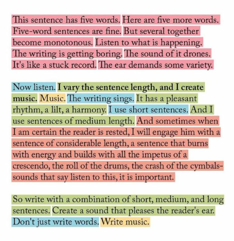

Communication #
A wealth of information creates a poverty of attention (Hebert Simon, Nobel laureate and PhD in computer science and organization psychology)
The single biggest problem with communication is the illusion that it has taken place.
What I need to know is how your work connects to everything else. Can you explain the essence of it in any way I understand? Can you share your work process in layman’s terms? Can you explain why it matters? And why you are passionate about it? If you can do this, you will expand my worldview. And you may do something else. You may spark new creativity or inspiration in me., Every of knowledge is different, but they are all connected.

General #
-
Although writing is most commonly thought of as a way of expressing thoughts that we have already formed, it is also an excellent tool for discovering and clarifying thoughts.
- Art of thinking, p15
-
Most people die vague about life and death … We imagine other people know definitely their own minds about things important to them and around them. but it is not so, we live in perpetual vagueness …
- Art of thinking, p15
- Solution: Freewriting
- It consists of focusing on a problem or issue, letting your mind produce whatever assosciations it will and writing down the resulting ideas, without pausing to evaluate any ideas (lets you shut off ideas prematurely). This writing is not intended to be shared, so there are no rules of composition and such.
Insights #
- Exploratory teaches and helps you to think more critically and clearly, cause it improves your “way of thinking”, how you get there. Teaching you often more and broader on a subject matter. You might naturally also take social implications into account when writing about a scientific invention.
- Writing code is the same mental process.
- You make something work (e.g. Make a test pass)
- You refactor towards cleaner code.
- You run the tests again to make sure they pass.
- You iterate
- As you iterate, you get more clarity how it all fits together, you structure, you process.
- Programmers are non-fiction writes.
- Rubber Ducking: As you try to explain a problem, you need to clarify your thoughts about the problem, so you can express them clearly. Often, you will find the answer yourself through this process of clarifying your thoughts.
- Any thought process works better by writing.
- Write your journey through the process, clarifying your thoughts.
- You can reread your thoughts and improve them.
- If you focus on clarification and simplification, you will get a better understanding.
- Examples: RFC, Research, Design Document, Diary, Journal, Architecture Proposal, Presentation, Blogging
- Writing an email in particular benefits from this: Any additional back-n-forth communication that is required due to unclarity, is exhausting.
- People that blog often, do write clear ones, often have a good understanding of things, through the process of writing a good blog post.
- Those who do not try effort in improving and simplifying their writing, yet write a lot, will not grow.
- The more you embrace the process of writing well, the more clear your thoughts become.
- Shorter writing does not mean shorter time to work on it (“If i had more time, i would have written a shorter letter”).
- President Woodrow Wilson on how long it takes to prepare a speech: It depends on the length of the speech
- If it is a 10 minute speech, it takes me all of 2 weeks to prepare it
- If it is half hour, it takes me a week
- If I can take as long as I want to, no preparation at all. I’am ready now.
- Knowledge is stored in the human’s mind is multidimensional, hierarchical and cross linking. When talking or speaking, we convert that knowledge into a one dimensional stream of words.
- That’s why, when talking/writing it is important to be linear and and cross link where necessary to avoid ambiguity, certain links are not obvious to the receiver.
- In the book about Reasoning they the following remark which fits in quite nicely
-
First, the emphasis on communication, on the crucial importance of the social activity of reasoning, means that we can scarcely afford any jargon at all.
-
The Iterative Thought Process #
A self defined process based on my insights on becoming a more clear thinker.
- The “The Iterative Thought Process” is a more generic version of this. You guide your brain, you structure your thoughts through different mediums (writing, drawing, visualizing, …). Writing happens to be one of them that works quite well.
- Visual Methods: Miro board, mind map, Business Model Canvas, Value Proposition Canvas, KanBan Board, …
- Key is to have a way to “Annotate” or “Visualize” concepts and thoughts and their relations (just like a system) so you can offload it all. Then you can review it, restructure, simplify, prune, do all the usual iterative steps to improve your thoughts and understanding.
- Steps:
- Offload your thoughts (all of partially)
- Structure (relations between them)
- Prune
- Review
- Iterate
- By offloading, it allows us to reflect on it, and work on it, however, most just offload and keep at that.
- By offloading, you create room for other thoughts and reflection, play with all elements.
- By offloading, you can focus on subparts of the whole topic.
- Did you know that your brain uses a constant amount of energy? Thinking harder, doesn’t result in using more energy. That’s why, when you focus, other things go to the background. Taking that fact in account, knowing the energy supply is constant, you can offload your thoughts, so the spotlight can then focus on the individual elements and parts, without keeping the big picture in your head.
- When writing as a part of the thought process: Write in a way that they don’t worry about beings criticized, it would damage/block their train of thoughts and ideas. That’s why a journal works so well.
- When coaching: During coaching a coach usually focusses on guiding questions (e.g. 5 WHY’s.) that help someone clarify someones existing thoughts or teaches them on how to think better, just like with Writing Across The Curriculim.
Related Concepts #
According to ChatGPT.
-
Cognitive Load Theory: This theory, developed by John Sweller, explores how human cognitive architecture handles information processing. It posits that learning is more effective when information is presented in a way that reduces unnecessary cognitive load, which aligns with the idea of refining and simplifying thoughts to enhance understanding and communication.
-
Iterative Design: In design fields, the iterative process involves repeated cycles of prototyping, testing, and refining a product or concept. This approach helps in gradually improving clarity and functionality, akin to refining thoughts or visualizations.
-
Metacognition: This is the awareness and understanding of one’s own thought processes. Metacognition involves self-regulation of cognition through planning, monitoring, and evaluating, which can include refining and rephrasing thoughts for better clarity.
-
Visual Thinking: This is a way to organize your thoughts and improve your ability to think and communicate through visual means. Techniques such as mind mapping, sketching, and diagramming are used to clarify and simplify complex ideas.
-
Information Design: This field focuses on presenting information in a way that is most effective for understanding. It includes principles of clarity, simplicity, and the reduction of unnecessary complexity, often achieved through visual means.
-
Clarity in Communication: The process of rewriting or rephrasing thoughts to enhance clarity is a fundamental principle in communication studies. Techniques from this field are often employed to ensure messages are clear, concise, and effective.
Rhetoric #
By investigating the rhetoric the writer or the reader can better understand the other, which might help to write a better document or to interpret it better. Helps also to understand what influences how a reader receives a message, which might be differ over time.
-
What is the Writer’s Purpose ?
- As a writer, understanding your purposes can help you in virtually every aspect of your writing process.
-
What influences writers ?
- As a writer, reflecting on your requirements and limitations can help you decide whether a particular decision-such as choice of topic or the inclusion of evidence from a particular type of source-will help or hurt your chances of accomplishing your purposes.
-
What is the Reader’s Purpose ?
- As a writer, understanding the purposes of your readers can help you create a more effective document.
-
What influences readers ?
- Writers who do not take their readers’ values and beliefs into account might miss an opportunity to create a more convincing, useful, or acceptable document.
- Readers’ knowledge of a particular topic will also affect their reading of a document. When writers assume that readers know more about a topic than they actually do, they can create a document that is difficult to understand.
- When they assume their readers know less than they actually do, they risk creating documents that repeat information readers already know. In both cases, readers are likely to stop reading the document.
-
What do Writers and Readers Know about Each Other?
-
What is the Context?
How to: Brief People #
Whenever you need to thoroughly brief a group of people on an important matter, consider using a 5-paragraph format.
- Situation
- Is about what position we’re in, and why we set out to do what we want to do. You can break this down into three sub-points, like the customer’s situation, the situation of your own company, any extra help that is available, and the current market.
- Objective
- Is what we want to achieve.
- Plan
- Is how we want to achieve it.
- Logistics
- Is about what budget and resources are available, and how they are used.
- Communications
- Is about how you’ll be coordinating among yourselves and with others in order to achieve your goal.
TIP: Do a follow-up round (hours or days later) to ask for questions, good questions usually don’t come up on the spot. There are always questions.
Resources #
- Art Of Thinking by Vincent Ruggiero.
- On Writing Well: The Classic Guide to Writing Nonfiction by William Zinsser.
- Reasoning by Michael Scriven.
- Ted Talks: The Official TED Guide to Public Speaking by Chris J. Anderson.
- WAC: Writing Across The Curriculum
- Writing To Learn by Willian Zinsser.
- WAC: Rethoric
- Level Of Disagreement
- MIT Writing Process